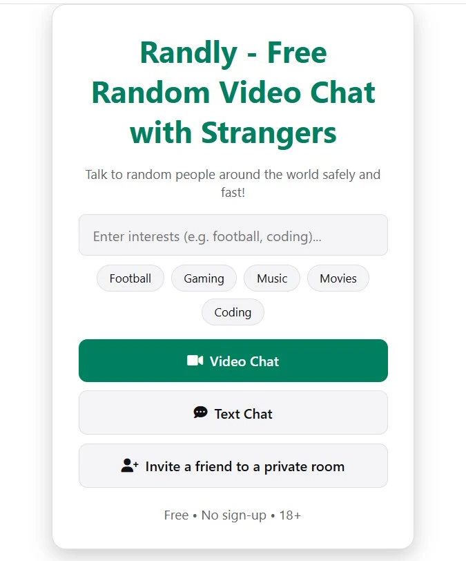

Terakhir diperbarui: Oktober 2026
Omegle tutup pada November 2023, dan jutaan orang tiba-tiba kehilangan cara favorit mereka untuk bertemu orang asing secara online. Sejak itu muncul puluhan «alternatif Omegle», dan jujur saja, semuanya tidak sama. Ada yang penuh iklan, ada yang tanpa moderasi sama sekali, dan ada yang memaksa Anda membuat akun sebelum bisa menyapa.
Panduan ini menjelaskan apa yang benar-benar penting saat memilih situs obrolan acak di 2026, apa yang sebaiknya dihindari, dan di mana posisi Randly. Entah Anda ingin melatih bahasa, berteman dengan orang dari negara lain, atau sekadar mengisi sepuluh menit, di akhir Anda akan tahu persis apa yang harus dicari.
Bertahun-tahun, Omegle menjadi tempat utama untuk bertemu orang acak di internet. Anda membuka situs, menekan satu tombol, dan dalam hitungan detik sudah berbicara dengan orang asing, lewat teks atau video. Semuanya sederhana, dan kesederhanaan itulah yang membuatnya sangat besar.
Situs itu tutup permanen pada November 2023. Sejak itu, banyak situs meminjam namanya atau meniru tampilannya. Penting untuk dipahami bahwa tidak ada satu pun dari mereka yang merupakan Omegle asli. Sebagian adalah situs obrolan acak yang cukup baik; sebagian lain adalah tiruan yang dibuat terutama untuk menampilkan iklan. Karena itu ada baiknya Anda memeriksa dengan teliti sebelum menghabiskan waktu di salah satunya.
Alternatif yang baik harus menjaga semangat itu sambil memperbaiki kelemahan Omegle: moderasi yang lemah dan keamanan yang buruk.
Banyak situs mengaku «gratis» tetapi mengunci fitur dasar, seperti memilih negara, di balik paket berbayar. Yang lain membiarkan Anda mencoba semenit lalu meminta Anda mendaftar. Layar pendaftaran adalah salah satu alasan paling umum orang meninggalkan situs obrolan acak, karena intinya adalah mulai mengobrol dengan cepat.
Sebelum menghabiskan waktu, periksa tiga hal: apakah Anda bisa mengobrol sebagai tamu, apakah filternya gratis, dan apakah situs mendorong Anda ke paket berbayar?
Cari tombol laporan, pemblokiran sementara otomatis untuk pelanggar berulang, dan aturan 18+ yang jelas. Situs tanpa moderasi adalah situs yang sebaiknya Anda tinggalkan. Moderasi yang baik tidak membuat situs benar-benar aman, tetapi menunjukkan bahwa pengelolanya peduli pada pengalaman pengguna.
Periksa juga apakah situs memberi tahu apa yang terjadi pada percakapan Anda. Situs yang tidak menyimpan obrolan Anda lebih baik untuk privasi daripada situs yang menyimpannya.
Sekarang kebanyakan orang mengobrol dari ponsel. Anda tidak perlu mengunduh aplikasi hanya untuk mencoba sebuah situs. Versi web yang baik berfungsi langsung di browser ponsel, jadi Anda bisa mulai dalam hitungan detik dan menutup tab saat selesai. Aplikasi boleh saja bagi yang menyukainya, tetapi harus opsional, bukan wajib.
Keacakan murni menyenangkan beberapa menit, lalu melelahkan. Anda terus melewati, melewati, melewati, dan tidak pernah menemukan obrolan yang bagus. Dua fitur mengatasinya:
Jika Anda ingin melatih bahasa Inggris, Spanyol, atau Arab, atau sekadar bertemu orang dari negara lain, terjemahan bawaan membuat percakapan jauh lebih mudah. Tanpa terjemahan, obrolan dengan orang yang berbicara bahasa lain biasanya berakhir setelah «halo». Dengan terjemahan, Anda bisa mengobrol sungguhan.
Tidak semua alternatif bekerja dengan cara yang sama. Berikut jenis yang umum Anda temui, beserta kelebihan dan kekurangannya:
Tidak ada jenis yang otomatis baik atau buruk. Pilihan yang tepat bergantung pada apa yang Anda inginkan. Namun jika Anda ingin pengalaman yang paling mirip dengan aslinya, situs browser yang sepenuhnya gratis dengan moderasi yang masuk akal adalah pilihan terbaik.
Randly adalah obrolan video dan teks acak gratis yang dibangun di sekitar lima poin tadi:

Kami membuat Randly karena layar pendaftaran itu menyebalkan. Anda membuka situs, mengonfirmasi bahwa usia Anda 18 tahun atau lebih, lalu langsung masuk. Tidak ada akun, tidak ada aplikasi untuk diunduh, dan tidak ada paket berbayar yang menyembunyikan fitur berguna. Pilihan negara dan terjemahan langsung, yang dikenai biaya di banyak situs lain, gratis di sini.
Itulah seluruh prosesnya. Tanpa email, tanpa kata sandi, dan tanpa menunggu.
Misalkan Anda dari Indonesia dan ingin berbicara dengan seseorang dari Turki. Di Randly Anda bisa memilih Turki sebagai negara, dan dengan terjemahan langsung aktif Anda membaca percakapan dalam bahasa Indonesia sementara lawan bicara membacanya dalam bahasa Turki. Terjemahan mencakup 12 bahasa, jadi bisa dipakai untuk banyak kombinasi lain. Ini juga cara yang sangat alami untuk melatih bahasa, karena Anda berbicara dengan orang sungguhan tentang hal-hal nyata.
Obrolan acak itu menyenangkan, tetapi juga tempat Anda bertemu orang asing, jadi beberapa kebiasaan sangat membantu:
Apakah Omegle akan kembali secara resmi?
Omegle tutup permanen pada 2023. Situs mana pun yang memakai namanya hari ini bukan layanan aslinya.
Apakah alternatif Omegle aman?
Tergantung situsnya. Pilih yang punya fitur laporan, pemblokiran, dan aturan yang jelas, dan selalu lindungi informasi pribadi Anda.
Apa alternatif Omegle terbaik tanpa pendaftaran?
Randly memungkinkan Anda memulai video chat atau obrolan teks dengan satu klik dan tanpa akun.
Bisakah saya memakai obrolan acak di ponsel?
Bisa. Randly berfungsi langsung di browser ponsel, tanpa mengunduh aplikasi.
Apakah memilih negara itu gratis?
Di Randly, ya. Pilihan negara dan terjemahan langsung sama-sama gratis. Banyak situs lain memungut biaya untuk keduanya, jadi periksa dulu sebelum mengandalkan sebuah filter.
Bisakah saya melatih bahasa di situs obrolan acak?
Bisa. Memilih negara dan memakai terjemahan langsung adalah cara yang bagus untuk berbicara dengan penutur asli dan berlatih secara alami.
Siapa yang boleh menggunakan Randly?
Hanya orang berusia 18 tahun ke atas. Layar pertama meminta Anda mengonfirmasi usia sebelum masuk.
Alternatif Omegle terbaik adalah yang menjaga kesan sederhana dan spontan dari aslinya sambil menganggap serius keamanan. Carilah situs yang gratis, tidak perlu mendaftar, berfungsi di ponsel, memungkinkan Anda memilih lawan bicara, dan memiliki moderasi yang nyata.
Coba Randly dan bandingkan sendiri. Anda juga bisa membaca panduan kami tentang video chat acak gratis tanpa daftar.